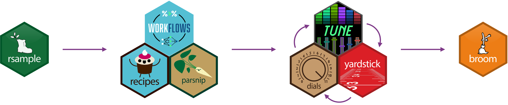
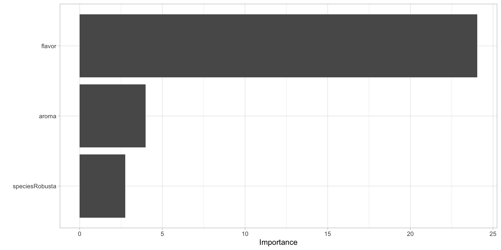
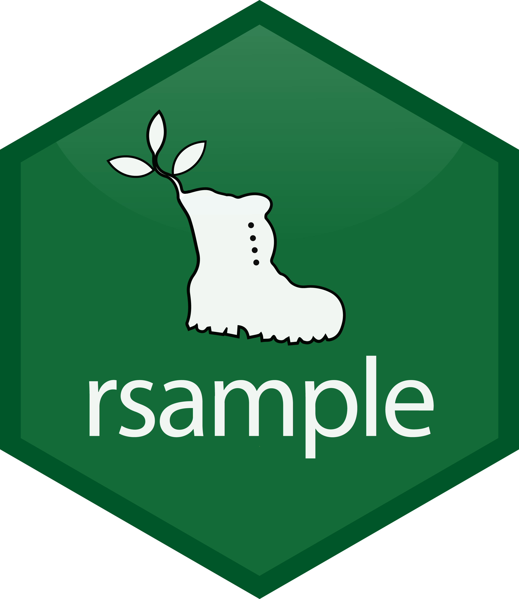
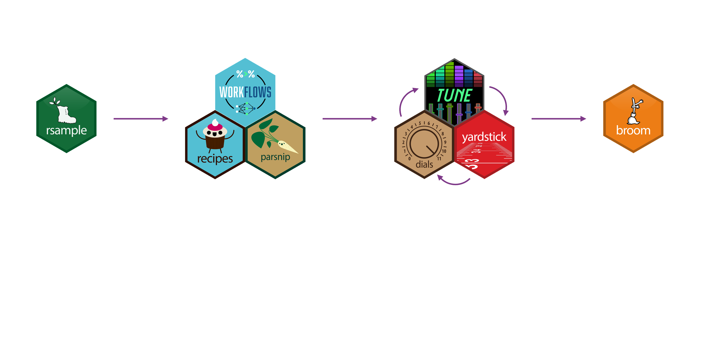
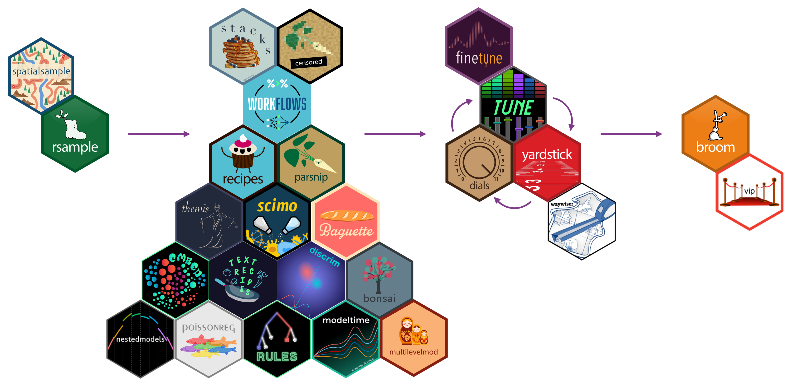
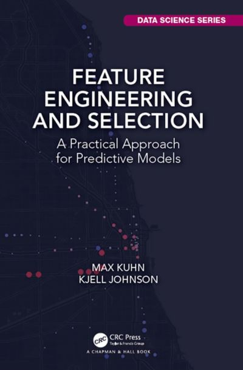
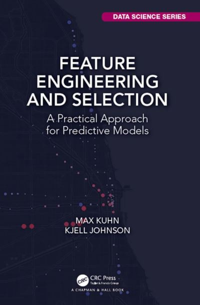

Content
What this tutorial is not
An R or tidyverse tutorial.
A machine learning or statistics lesson.
What this tutorial is
- A tutorial on how to use ML method within the
{tidymodels}ecosystem.
Servier
AgroStat 2024 – Bragança
Intro
Data
{parsnip}
{rsample}
{recipes}
Workflows and metrics
{tune}
Outro
The slides can be found at https://abichat.github.io/agrostat24-tuto-tidymodels.
Raw material is available at https://github.com/abichat/agrostat24-tuto-tidymodels.
What this tutorial is not
An R or tidyverse tutorial.
A machine learning or statistics lesson.
What this tutorial is
{tidymodels} ecosystem.{tidymodels} ecosystem
Advantages
Format/notation/workflow standardised for several algorithms/methods.
Encapsulates different parts (e.g. test/train resampling) within a single object.
Facilitates preprocessing steps, model selection, and hyperparameter optimization.
Highly modular, each step corresponds to a package.
Intro
Data
{parsnip}
{rsample}
{recipes}
Workflows and metrics
{tune}
Outro
Coffee Quality Database is a dataset provided by James LeDoux, compiled from review pages of the Coffee Quality Institute.
Dataset data_coffee.csv can be found on GitHub abichat/agrostat24-tuto-tidymodels.
Goal
Predict cupper_points (a score from 0 to 10) based on the following variables:
Aromatic and flavor characteristics (aroma, flavor, aftertaste, etc.).
Grain characteristics (species, color, etc.).
Environmental characteristics (country, altitude, etc.).
# A tibble: 1,339 × 13
cupper_points aroma flavor aftertaste acidity sweetness species
<dbl> <dbl> <dbl> <dbl> <dbl> <dbl> <chr>
1 8.75 8.67 8.83 8.67 8.75 10 Arabica
2 8.58 8.75 8.67 8.5 8.58 10 Arabica
3 9.25 8.42 8.5 8.42 8.42 10 Arabica
4 8.67 8.17 8.58 8.42 8.42 10 Arabica
5 8.58 8.25 8.5 8.25 8.5 10 Arabica
6 8.33 8.58 8.42 8.42 8.5 10 Arabica
# ℹ 1,333 more rows
# ℹ 6 more variables: country_of_origin <chr>, variety <chr>,
# processing_method <chr>, color <chr>, altitude <dbl>, unit <chr>Familiarize yourself with the coffee_raw dataset. Are there any outliers or variables that need to be adjusted?
10:00
coffee <-
coffee_raw %>%
filter(if_all(cupper_points:acidity, ~ . > 4)) %>%
mutate(across(where(is.character), as_factor),
altitude = if_else(unit == "ft", altitude * 0.3048, altitude),
altitude = if_else(altitude > 8000, NA, altitude))
coffee# A tibble: 1,338 × 13
cupper_points aroma flavor aftertaste acidity sweetness species
<dbl> <dbl> <dbl> <dbl> <dbl> <dbl> <fct>
1 8.75 8.67 8.83 8.67 8.75 10 Arabica
2 8.58 8.75 8.67 8.5 8.58 10 Arabica
3 9.25 8.42 8.5 8.42 8.42 10 Arabica
4 8.67 8.17 8.58 8.42 8.42 10 Arabica
5 8.58 8.25 8.5 8.25 8.5 10 Arabica
6 8.33 8.58 8.42 8.42 8.5 10 Arabica
# ℹ 1,332 more rows
# ℹ 6 more variables: country_of_origin <fct>, variety <fct>,
# processing_method <fct>, color <fct>, altitude <dbl>, unit <fct>{parsnip}Intro
Data
{parsnip}
{rsample}
{recipes}
Workflows and metrics
{tune}
Outro
{parsnip}Credit : Allison Horst
{parsnip}A model (rand_forest(), linear_reg()…)
An engine (ranger, randomForest…)
A mode (regression, classification…)
Hyperparameters (trees, penalty…)
https://www.tidymodels.org/find/parsnip/
{parsnip}?Model creation
{parsnip}?Model fit
{parsnip}?Prediction
{parsnip}?Add prediction
linear_reg(mode = "regression", engine = "lm") %>%
fit(cupper_points ~ aroma + flavor + species, data = coffee) %>%
augment(coffee)# A tibble: 1,338 × 15
.pred .resid cupper_points aroma flavor aftertaste acidity sweetness species
<dbl> <dbl> <dbl> <dbl> <dbl> <dbl> <dbl> <dbl> <fct>
1 8.74 0.0150 8.75 8.67 8.83 8.67 8.75 10 Arabica
2 8.62 -0.0357 8.58 8.75 8.67 8.5 8.58 10 Arabica
3 8.43 0.822 9.25 8.42 8.5 8.42 8.42 10 Arabica
4 8.46 0.213 8.67 8.17 8.58 8.42 8.42 10 Arabica
5 8.40 0.177 8.58 8.25 8.5 8.25 8.5 10 Arabica
6 8.39 -0.0559 8.33 8.58 8.42 8.42 8.5 10 Arabica
# ℹ 1,332 more rows
# ℹ 6 more variables: country_of_origin <fct>, variety <fct>,
# processing_method <fct>, color <fct>, altitude <dbl>, unit <fct>{parsnip}?Statistics and type I anova
linear_reg(mode = "regression", engine = "lm") %>%
fit(cupper_points ~ aroma + flavor + species, data = coffee) %>%
extract_fit_engine() %>% # need to extract `lm` object
summary()
Call:
stats::lm(formula = cupper_points ~ aroma + flavor + species,
data = data)
Residuals:
Min 1Q Median 3Q Max
-2.61088 -0.12361 -0.00840 0.09759 2.94352
Coefficients:
Estimate Std. Error t value Pr(>|t|)
(Intercept) 0.22989 0.19437 1.183 0.23712
aroma 0.14671 0.03684 3.982 7.19e-05 ***
flavor 0.81916 0.03406 24.048 < 2e-16 ***
speciesRobusta 0.15077 0.05469 2.757 0.00592 **
---
Signif. codes: 0 '***' 0.001 '**' 0.01 '*' 0.05 '.' 0.1 ' ' 1
Residual standard error: 0.2858 on 1334 degrees of freedom
Multiple R-squared: 0.5525, Adjusted R-squared: 0.5515
F-statistic: 549.1 on 3 and 1334 DF, p-value: < 2.2e-16{parsnip}?Type I anova in a tidy way
linear_reg(mode = "regression", engine = "lm") %>%
fit(cupper_points ~ aroma + flavor + species, data = coffee) %>%
# extract_fit_engine() %>% # not necessary
tidy() # A tibble: 4 × 5
term estimate std.error statistic p.value
<chr> <dbl> <dbl> <dbl> <dbl>
1 (Intercept) 0.230 0.194 1.18 2.37e- 1
2 aroma 0.147 0.0368 3.98 7.19e- 5
3 flavor 0.819 0.0341 24.0 1.91e-106
4 speciesRobusta 0.151 0.0547 2.76 5.92e- 3{parsnip}?Variable importance
{rsample}Intro
Data
{parsnip}
{rsample}
{recipes}
Workflows and metrics
{tune}
Outro
{rsample}Main purpose: to avoid overfitting.
Used here to evaluate model performance in a hold-out setting.
Different types of resampling and associated object classes:
Class rsplit for individual resamples.
Class rset for a collection of resamples.

Crédit : Feature Engineering and Selection, Max Kuhn et Kjell Johnson
For cross-validation, the resampled sets are often called analysis/assessment.
No data copy.
# A tibble: 1,003 × 13
cupper_points aroma flavor aftertaste acidity sweetness species
<dbl> <dbl> <dbl> <dbl> <dbl> <dbl> <fct>
1 8.58 8.75 8.67 8.5 8.58 10 Arabica
2 9.25 8.42 8.5 8.42 8.42 10 Arabica
3 8.67 8.17 8.58 8.42 8.42 10 Arabica
4 8.58 8.25 8.5 8.25 8.5 10 Arabica
5 8.33 8.58 8.42 8.42 8.5 10 Arabica
6 9 8.25 8.33 8.5 8.42 9.33 Arabica
# ℹ 997 more rows
# ℹ 6 more variables: country_of_origin <fct>, variety <fct>,
# processing_method <fct>, color <fct>, altitude <dbl>, unit <fct># A tibble: 335 × 13
cupper_points aroma flavor aftertaste acidity sweetness species
<dbl> <dbl> <dbl> <dbl> <dbl> <dbl> <fct>
1 8.75 8.67 8.83 8.67 8.75 10 Arabica
2 8.5 8.42 8.5 8.33 8.5 10 Arabica
3 8.58 8.33 8.42 8.08 8.25 10 Arabica
4 8.5 8.25 8.33 8.5 8.25 9.33 Arabica
5 8.17 8 8.25 8.08 8.5 10 Arabica
6 8.33 8.08 8.25 8 8.17 10 Arabica
# ℹ 329 more rows
# ℹ 6 more variables: country_of_origin <fct>, variety <fct>,
# processing_method <fct>, color <fct>, altitude <dbl>, unit <fct># 10-fold cross-validation
# A tibble: 10 × 2
splits id
<list> <chr>
1 <split [902/101]> Fold01
2 <split [902/101]> Fold02
3 <split [902/101]> Fold03
4 <split [903/100]> Fold04
5 <split [903/100]> Fold05
6 <split [903/100]> Fold06
7 <split [903/100]> Fold07
8 <split [903/100]> Fold08
9 <split [903/100]> Fold09
10 <split [903/100]> Fold10# A tibble: 902 × 13
cupper_points aroma flavor aftertaste acidity sweetness species
<dbl> <dbl> <dbl> <dbl> <dbl> <dbl> <fct>
1 8.58 8.75 8.67 8.5 8.58 10 Arabica
2 8.67 8.17 8.58 8.42 8.42 10 Arabica
3 8.58 8.25 8.5 8.25 8.5 10 Arabica
4 9 8.25 8.33 8.5 8.42 9.33 Arabica
5 8.67 8.67 8.67 8.58 8.42 9.33 Arabica
6 8.5 8.08 8.58 8.5 8.5 10 Arabica
# ℹ 896 more rows
# ℹ 6 more variables: country_of_origin <fct>, variety <fct>,
# processing_method <fct>, color <fct>, altitude <dbl>, unit <fct># A tibble: 101 × 13
cupper_points aroma flavor aftertaste acidity sweetness species
<dbl> <dbl> <dbl> <dbl> <dbl> <dbl> <fct>
1 9.25 8.42 8.5 8.42 8.42 10 Arabica
2 8.33 8.58 8.42 8.42 8.5 10 Arabica
3 8.42 8.17 7.83 8 8.08 10 Arabica
4 8 8 8 8 8.08 10 Arabica
5 7.92 7.83 8 8 7.75 10 Arabica
6 8.08 7.75 7.83 7.83 8.17 10 Arabica
# ℹ 95 more rows
# ℹ 6 more variables: country_of_origin <fct>, variety <fct>,
# processing_method <fct>, color <fct>, altitude <dbl>, unit <fct>{recipes}Intro
Data
{parsnip}
{rsample}
{recipes}
Workflows and metrics
{tune}
Outro
{recipes}Crédit : Allison Horst
{recipes}Handle missing data, errors, and outliers.
Create new variables by transforming or combining existing ones.
Normalize or encode existing variables differently.
In an order defined by step_*() functions.

https://www.tidymodels.org/find/recipes/
Initialization of the recipe: formula and training dataset.
Add steps.
recipe(cupper_points ~ ., data = cf_train) %>%
step_normalize(all_numeric_predictors()) # center & reduce── Recipe ──────────────────────────────────────────────────────────────────────── Inputs Number of variables by roleoutcome: 1
predictor: 12── Operations • Centering and scaling for: all_numeric_predictors()Estimate preprocessing parameters.
── Recipe ──────────────────────────────────────────────────────────────────────── Inputs Number of variables by roleoutcome: 1
predictor: 12── Training information Training data contained 1003 data points and 326 incomplete rows.── Operations • Centering and scaling for: aroma, flavor, aftertaste, ... | TrainedApply therecipe on cf_train.
recipe(cupper_points ~ ., data = cf_train) %>%
step_normalize(all_numeric_predictors()) %>%
prep() %>%
bake(new_data = NULL)# A tibble: 1,003 × 13
aroma flavor aftertaste acidity sweetness species country_of_origin variety
<dbl> <dbl> <dbl> <dbl> <dbl> <fct> <fct> <fct>
1 3.74 3.44 3.17 3.26 0.259 Arabica Ethiopia Other
2 2.70 2.93 2.94 2.75 0.259 Arabica Guatemala Bourbon
3 1.90 3.17 2.94 2.75 0.259 Arabica Ethiopia <NA>
4 2.16 2.93 2.44 3.00 0.259 Arabica Ethiopia Other
5 3.20 2.68 2.94 3.00 0.259 Arabica Brazil <NA>
6 2.16 2.41 3.17 2.75 -1.05 Arabica Ethiopia <NA>
# ℹ 997 more rows
# ℹ 5 more variables: processing_method <fct>, color <fct>, altitude <dbl>,
# unit <fct>, cupper_points <dbl>Check if variables are centered and reduced.
recipe(cupper_points ~ ., data = cf_train) %>%
step_normalize(all_numeric_predictors()) %>%
prep() %>%
bake(new_data = NULL) %>%
summarise(across(c(aroma, flavor, aftertaste),
list(mean = mean, sd = sd))) # A tibble: 1 × 6
aroma_mean aroma_sd flavor_mean flavor_sd aftertaste_mean aftertaste_sd
<dbl> <dbl> <dbl> <dbl> <dbl> <dbl>
1 -7.83e-16 1.00 5.92e-15 1.00 1.01e-14 1.00recipe(cupper_points ~ ., data = cf_train) %>%
step_unknown(all_nominal_predictors()) %>% # turn NA into "unknown"
step_novel(all_nominal_predictors()) %>% # new unseen level will be set to "new"
step_dummy(all_nominal_predictors()) %>% # dummy binary variables
prep() ── Recipe ──────────────────────────────────────────────────────────────────────── Inputs Number of variables by roleoutcome: 1
predictor: 12── Training information Training data contained 1003 data points and 326 incomplete rows.── Operations • Unknown factor level assignment for: species, ... | Trained• Novel factor level assignment for: species, ... | Trained• Dummy variables from: species, country_of_origin, variety, ... | Trainedrecipe(cupper_points ~ ., data = cf_train) %>%
step_unknown(all_nominal_predictors()) %>%
step_novel(all_nominal_predictors()) %>%
step_dummy(all_nominal_predictors()) %>%
prep() %>%
bake(new_data = NULL) %>%
select(starts_with(c("species", "color")))# A tibble: 1,003 × 8
species_Robusta species_unknown species_new color_Bluish.Green color_None
<dbl> <dbl> <dbl> <dbl> <dbl>
1 0 0 0 0 0
2 0 0 0 0 0
3 0 0 0 0 0
4 0 0 0 0 0
5 0 0 0 1 0
6 0 0 0 0 0
# ℹ 997 more rows
# ℹ 3 more variables: color_Blue.Green <dbl>, color_unknown <dbl>,
# color_new <dbl>Using {recipes} steps, (https://recipes.tidymodels.org/reference), find a suitable preprocessing for cf_train.
07:00
cf_rec <-
recipe(cupper_points ~ ., data = cf_train) %>%
update_role(unit, new_role = "notused") %>%
step_unknown(variety, processing_method, country_of_origin,
color, new_level = "unknown") %>%
step_novel(all_nominal_predictors()) %>%
step_other(country_of_origin, threshold = 0.01) %>%
step_other(processing_method, variety, threshold = 0.1) %>%
step_impute_linear(altitude,
impute_with = imp_vars(country_of_origin)) %>%
step_dummy(all_nominal_predictors()) %>%
step_impute_median(all_numeric_predictors()) %>%
step_zv(all_numeric_predictors()) %>%
step_normalize(all_numeric_predictors())── Recipe ──────────────────────────────────────────────────────────────────────── Inputs Number of variables by roleoutcome: 1
predictor: 11
notused: 1── Operations • Unknown factor level assignment for: variety and processing_method, ...• Novel factor level assignment for: all_nominal_predictors()• Collapsing factor levels for: country_of_origin• Collapsing factor levels for: processing_method and variety• Linear regression imputation for: altitude• Dummy variables from: all_nominal_predictors()• Median imputation for: all_numeric_predictors()• Zero variance filter on: all_numeric_predictors()• Centering and scaling for: all_numeric_predictors()── Recipe ──────────────────────────────────────────────────────────────────────── Inputs Number of variables by roleoutcome: 1
predictor: 11
notused: 1── Training information Training data contained 1003 data points and 326 incomplete rows.── Operations • Unknown factor level assignment for: variety, ... | Trained• Novel factor level assignment for: species, ... | Trained• Collapsing factor levels for: country_of_origin | Trained• Collapsing factor levels for: processing_method and variety | Trained• Linear regression imputation for: altitude | Trained• Dummy variables from: species, country_of_origin, variety, ... | Trained• Median imputation for: aroma, flavor, aftertaste, acidity, ... | Trained• Zero variance filter removed: species_new and color_new | Trained• Centering and scaling for: aroma, flavor, aftertaste, ... | Trained# A tibble: 1,003 × 37
aroma flavor aftertaste acidity sweetness altitude unit cupper_points
<dbl> <dbl> <dbl> <dbl> <dbl> <dbl> <fct> <dbl>
1 3.74 3.44 3.17 3.26 0.259 1.58 m 8.58
2 2.70 2.93 2.94 2.75 0.259 0.924 m 9.25
3 1.90 3.17 2.94 2.75 0.259 1.45 m 8.67
4 2.16 2.93 2.44 3.00 0.259 1.58 m 8.58
5 3.20 2.68 2.94 3.00 0.259 -0.431 m 8.33
6 2.16 2.41 3.17 2.75 -1.05 0.811 m 9
# ℹ 997 more rows
# ℹ 29 more variables: species_Robusta <dbl>,
# country_of_origin_Guatemala <dbl>, country_of_origin_Brazil <dbl>,
# country_of_origin_United.States..Hawaii. <dbl>,
# country_of_origin_Indonesia <dbl>, country_of_origin_China <dbl>,
# country_of_origin_Costa.Rica <dbl>, country_of_origin_Mexico <dbl>,
# country_of_origin_Uganda <dbl>, country_of_origin_Honduras <dbl>, …Intro
Data
{parsnip}
{rsample}
{recipes}
Workflows and metrics
{tune}
Outro
Simplify the steps by combining the recipe and the model together.
A single object to handle for various tasks:
Estimating preprocessing parameters on the training set,
Estimating model parameters on the training set,
Applying preprocessing to the test set,
Predicting and evaluating the model on the test set,
And more, such as cross-validation.
{yardstick}Set of functions to estimate model quality.
Input: a data frame, the column of true values, and the column of predictions.
Output: a data frame with the requested metrics.

https://yardstick.tidymodels.org/reference/
══ Workflow ════════════════════════════════════════════════════════════════════
Preprocessor: Recipe
Model: linear_reg()
── Preprocessor ────────────────────────────────────────────────────────────────
9 Recipe Steps
• step_unknown()
• step_novel()
• step_other()
• step_other()
• step_impute_linear()
• step_dummy()
• step_impute_median()
• step_zv()
• step_normalize()
── Model ───────────────────────────────────────────────────────────────────────
Linear Regression Model Specification (regression)
Computational engine: lm ══ Workflow [trained] ══════════════════════════════════════════════════════════
Preprocessor: Recipe
Model: linear_reg()
── Preprocessor ────────────────────────────────────────────────────────────────
9 Recipe Steps
• step_unknown()
• step_novel()
• step_other()
• step_other()
• step_impute_linear()
• step_dummy()
• step_impute_median()
• step_zv()
• step_normalize()
── Model ───────────────────────────────────────────────────────────────────────
Call:
stats::lm(formula = ..y ~ ., data = data)
Coefficients:
(Intercept)
7.508674
aroma
0.011873
flavor
0.163501
aftertaste
0.118719
acidity
0.039276
sweetness
0.010274
altitude
-0.008988
species_Robusta
-0.006244
country_of_origin_Guatemala
-0.034174
country_of_origin_Brazil
-0.014097
country_of_origin_United.States..Hawaii.
-0.028764
country_of_origin_Indonesia
-0.024927
country_of_origin_China
0.003308
country_of_origin_Costa.Rica
-0.004014
country_of_origin_Mexico
-0.004706
country_of_origin_Uganda
-0.006009
country_of_origin_Honduras
-0.013790
country_of_origin_Taiwan
0.002220
country_of_origin_Nicaragua
-0.022671
country_of_origin_Tanzania..United.Republic.Of
-0.001615
country_of_origin_Kenya
-0.021102
country_of_origin_Thailand
-0.013158
country_of_origin_Colombia
...
and 28 more lines.workflow(preprocessor = cf_rec,
spec = linear_reg()) %>%
fit(cf_train) %>%
augment(cf_test) # predict() + bind_cols() works too# A tibble: 335 × 15
.pred .resid cupper_points aroma flavor aftertaste acidity sweetness species
<dbl> <dbl> <dbl> <dbl> <dbl> <dbl> <dbl> <dbl> <fct>
1 8.78 -0.0309 8.75 8.67 8.83 8.67 8.75 10 Arabica
2 8.55 -0.0467 8.5 8.42 8.5 8.33 8.5 10 Arabica
3 8.35 0.229 8.58 8.33 8.42 8.08 8.25 10 Arabica
4 8.54 -0.0360 8.5 8.25 8.33 8.5 8.25 9.33 Arabica
5 8.29 -0.115 8.17 8 8.25 8.08 8.5 10 Arabica
6 8.21 0.124 8.33 8.08 8.25 8 8.17 10 Arabica
# ℹ 329 more rows
# ℹ 6 more variables: country_of_origin <fct>, variety <fct>,
# processing_method <fct>, color <fct>, altitude <dbl>, unit <fct>Using the tune::last_fit() function, estimate the RMSE for a random forest model and visualize the correlation between cupper_points and predicted cupper_points on the test data.
07:00
cf_lf_rf <-
workflow(preprocessor = cf_rec,
spec = rand_forest(mode = "regression")) %>%
last_fit(cf_split)
cf_lf_rf# Resampling results
# Manual resampling
# A tibble: 1 × 6
splits id .metrics .notes .predictions .workflow
<list> <chr> <list> <list> <list> <list>
1 <split [1003/335]> train/test split <tibble> <tibble> <tibble> <workflow>Build the model.
Create a preprocessing recipe.
Build the model.
Create a preprocessing recipe.
Combine the model and recipe into a workflow.
Build the model.
Create a preprocessing recipe.
Combine the model and recipe into a workflow.
Train the workflow using the fit() function.
Build the model.
Create a preprocessing recipe.
Combine the model and recipe into a workflow.
Train the workflow using the fit() function.
Use the trained workflow to predict on unseen data with predict().
Build the model.
Create a preprocessing recipe.
Combine the model and recipe into a workflow.
Train the workflow on the training set and predict on the test set using last_fit().
{tune}Intro
Data
{parsnip}
{rsample}
{recipes}
Workflows and metrics
{tune}
Outro
{tune}Some preprocessing steps and models require selecting hyperparameters:
penalty, and mixture for linear_reg()
trees, mtry and min_n for rand_forest()
threshold for step_other()
…
rf_tune <-
rand_forest(mode = "regression", engine = "ranger",
trees = 500, mtry = tune(), min_n = tune())
wkf_rf_tune <- workflow(preprocessor = cf_rec, spec = rf_tune)
wkf_rf_tune══ Workflow ════════════════════════════════════════════════════════════════════
Preprocessor: Recipe
Model: rand_forest()
── Preprocessor ────────────────────────────────────────────────────────────────
9 Recipe Steps
• step_unknown()
• step_novel()
• step_other()
• step_other()
• step_impute_linear()
• step_dummy()
• step_impute_median()
• step_zv()
• step_normalize()
── Model ───────────────────────────────────────────────────────────────────────
Random Forest Model Specification (regression)
Main Arguments:
mtry = tune()
trees = 500
min_n = tune()
Computational engine: ranger set.seed(345)
res_tune <- tune_grid(wkf_rf_tune, cf_cv, grid = 15,
control = control_grid(verbose = FALSE))
res_tune# Tuning results
# 10-fold cross-validation
# A tibble: 10 × 4
splits id .metrics .notes
<list> <chr> <list> <list>
1 <split [902/101]> Fold01 <tibble [30 × 6]> <tibble [0 × 3]>
2 <split [902/101]> Fold02 <tibble [30 × 6]> <tibble [0 × 3]>
3 <split [902/101]> Fold03 <tibble [30 × 6]> <tibble [0 × 3]>
4 <split [903/100]> Fold04 <tibble [30 × 6]> <tibble [0 × 3]>
5 <split [903/100]> Fold05 <tibble [30 × 6]> <tibble [0 × 3]>
6 <split [903/100]> Fold06 <tibble [30 × 6]> <tibble [0 × 3]>
7 <split [903/100]> Fold07 <tibble [30 × 6]> <tibble [0 × 3]>
8 <split [903/100]> Fold08 <tibble [0 × 6]> <tibble [1 × 3]>
9 <split [903/100]> Fold09 <tibble [30 × 6]> <tibble [0 × 3]>
10 <split [903/100]> Fold10 <tibble [30 × 6]> <tibble [0 × 3]>
There were issues with some computations:
- Error(s) x1: Error in `step_impute_linear()`: Caused by error in `model.frame....
Run `show_notes(.Last.tune.result)` for more information.# A tibble: 5 × 8
mtry min_n .metric .estimator mean n std_err .config
<int> <int> <chr> <chr> <dbl> <int> <dbl> <chr>
1 9 11 rmse standard 0.259 9 0.0327 Preprocessor1_Model12
2 11 12 rmse standard 0.261 9 0.0333 Preprocessor1_Model13
3 6 24 rmse standard 0.262 9 0.0334 Preprocessor1_Model07
4 16 19 rmse standard 0.268 9 0.0339 Preprocessor1_Model08
5 21 5 rmse standard 0.268 9 0.0321 Preprocessor1_Model15══ Workflow ════════════════════════════════════════════════════════════════════
Preprocessor: Recipe
Model: rand_forest()
── Preprocessor ────────────────────────────────────────────────────────────────
9 Recipe Steps
• step_unknown()
• step_novel()
• step_other()
• step_other()
• step_impute_linear()
• step_dummy()
• step_impute_median()
• step_zv()
• step_normalize()
── Model ───────────────────────────────────────────────────────────────────────
Random Forest Model Specification (regression)
Main Arguments:
mtry = tune()
trees = 500
min_n = tune()
Computational engine: ranger ══ Workflow ════════════════════════════════════════════════════════════════════
Preprocessor: Recipe
Model: rand_forest()
── Preprocessor ────────────────────────────────────────────────────────────────
9 Recipe Steps
• step_unknown()
• step_novel()
• step_other()
• step_other()
• step_impute_linear()
• step_dummy()
• step_impute_median()
• step_zv()
• step_normalize()
── Model ───────────────────────────────────────────────────────────────────────
Random Forest Model Specification (regression)
Main Arguments:
mtry = 9
trees = 500
min_n = 11
Computational engine: ranger Using finetune::tune_race_anova() function, optimise elastic-net regression hyperparameters.
07:00
# Tuning results
# 10-fold cross-validation
# A tibble: 25 × 5
splits id .order .metrics .notes
<list> <chr> <int> <list> <list>
1 <split [902/101]> Fold01 2 <tibble [20 × 6]> <tibble [0 × 3]>
2 <split [902/101]> Fold02 3 <tibble [20 × 6]> <tibble [0 × 3]>
3 <split [903/100]> Fold07 1 <tibble [20 × 6]> <tibble [0 × 3]>
4 <split [903/100]> Fold09 4 <tibble [18 × 6]> <tibble [0 × 3]>
5 <split [902/101]> Fold03 8 <tibble [2 × 6]> <tibble [0 × 3]>
6 <split [903/100]> Fold04 10 <tibble [2 × 6]> <tibble [0 × 3]>
# ℹ 19 more rows
There were issues with some computations:
- Error(s) x1: Error in `step_impute_linear()`: Caused by error in `model.frame....
Run `show_notes(.Last.tune.result)` for more information.Create a workflow with parameters to be optimized in the model and/or the recipe.
Train and evaluate the model on different analysis/assessment datasets from cross-validation using tune_grid() or a similar function.
Create a workflow with parameters to be optimized in the model and/or the recipe.
Train and evaluate the model on different analysis/assessment datasets from cross-validation using tune_grid() or a similar function.
Retrieve the workflow with the best combination of hyperparameters using select_best() or a similar function.
{workflowsets}Combine recipe and model inside a unique object.
all_models <-
workflow_set(
preproc = list(normalized = cf_rec),
models = list(lm = linear_reg(),
rf = rand_forest(mode = "regression"),
tuned_rf = rand_forest(mode = "regression", trees = 500,
mtry = param_rf$mtry, min_n = param_rf$min_n),
boost_tree = boost_tree(mode = "regression", engine = "xgboost")),
cross = TRUE)
all_models# A workflow set/tibble: 4 × 4
wflow_id info option result
<chr> <list> <list> <list>
1 normalized_lm <tibble [1 × 4]> <opts[0]> <list [0]>
2 normalized_rf <tibble [1 × 4]> <opts[0]> <list [0]>
3 normalized_tuned_rf <tibble [1 × 4]> <opts[0]> <list [0]>
4 normalized_boost_tree <tibble [1 × 4]> <opts[0]> <list [0]>{workflowsets}══ Workflow ════════════════════════════════════════════════════════════════════
Preprocessor: Recipe
Model: rand_forest()
── Preprocessor ────────────────────────────────────────────────────────────────
9 Recipe Steps
• step_unknown()
• step_novel()
• step_other()
• step_other()
• step_impute_linear()
• step_dummy()
• step_impute_median()
• step_zv()
• step_normalize()
── Model ───────────────────────────────────────────────────────────────────────
Random Forest Model Specification (regression)
Computational engine: ranger {workflowsets}set.seed(567)
res_all_models <-
all_models %>%
workflow_map(fn = "fit_resamples", resamples = cf_cv)
res_all_models# A workflow set/tibble: 4 × 4
wflow_id info option result
<chr> <list> <list> <list>
1 normalized_lm <tibble [1 × 4]> <opts[1]> <rsmp[+]>
2 normalized_rf <tibble [1 × 4]> <opts[1]> <rsmp[+]>
3 normalized_tuned_rf <tibble [1 × 4]> <opts[1]> <rsmp[+]>
4 normalized_boost_tree <tibble [1 × 4]> <opts[1]> <rsmp[+]>{workflowsets}{workflowsets}rank_results(res_all_models,
rank_metric = "rmse", # <- how to order models
select_best = TRUE # <- one point per workflow
) %>%
select(rank, wflow_id, .metric, mean)# A tibble: 8 × 4
rank wflow_id .metric mean
<int> <chr> <chr> <dbl>
1 1 normalized_rf rmse 0.257
2 1 normalized_rf rsq 0.654
3 2 normalized_tuned_rf rmse 0.261
4 2 normalized_tuned_rf rsq 0.639
5 3 normalized_boost_tree rmse 0.269
6 3 normalized_boost_tree rsq 0.623
7 4 normalized_lm rmse 0.273
8 4 normalized_lm rsq 0.604Intro
Data
{parsnip}
{rsample}
{recipes}
Workflows and metrics
{tune}
Outro


Official documentation https://www.tidymodels.org
Blog posts https://www.tidyverse.org/tags/tidymodels
Book Tidy Modeling with R, Kuhn & Silge https://www.tmwr.org (free online version)
Book Feature Engineering and Selection, Kuhn & Johnson https://bookdown.org/max/FES (free online version)
 

About cupping https://nomadbarista.com/cupping-cafe-ou-la-degustation-du-cafe/
This tutorial was originally co-presented with Julie Aubert.
For the Rencontres R 2023 in Avignon.

─ Session info ───────────────────────────────────────────────────────────────
setting value
version R version 4.3.3 (2024-02-29)
os macOS Sonoma 14.5
system aarch64, darwin20
ui X11
language (EN)
collate en_US.UTF-8
ctype en_US.UTF-8
tz Europe/Paris
date 2024-09-01
pandoc 3.1.11 @ /Applications/RStudio.app/Contents/Resources/app/quarto/bin/tools/aarch64/ (via rmarkdown)
─ Packages ───────────────────────────────────────────────────────────────────
package * version date (UTC) lib source
backports 1.5.0 2024-05-23 [1] CRAN (R 4.3.3)
bit 4.0.5 2022-11-15 [1] CRAN (R 4.3.0)
bit64 4.0.5 2020-08-30 [1] CRAN (R 4.3.0)
boot 1.3-30 2024-02-26 [1] CRAN (R 4.3.1)
broom * 1.0.6 2024-05-17 [1] CRAN (R 4.3.3)
class 7.3-22 2023-05-03 [1] CRAN (R 4.3.3)
cli 3.6.3 2024-06-21 [1] CRAN (R 4.3.3)
codetools 0.2-20 2024-03-31 [1] CRAN (R 4.3.1)
colorspace 2.1-1 2024-07-26 [1] CRAN (R 4.3.3)
corrr * 0.4.4 2022-08-16 [1] CRAN (R 4.3.0)
countdown 0.4.0 2022-08-16 [1] CRAN (R 4.3.0)
crayon 1.5.3 2024-06-20 [1] CRAN (R 4.3.3)
data.table 1.15.4 2024-03-30 [1] CRAN (R 4.3.1)
dials * 1.2.1 2024-02-22 [1] CRAN (R 4.3.1)
DiceDesign 1.10 2023-12-07 [1] CRAN (R 4.3.1)
digest 0.6.36 2024-06-23 [1] CRAN (R 4.3.3)
dplyr * 1.1.4 2023-11-17 [1] CRAN (R 4.3.1)
evaluate 0.24.0 2024-06-10 [1] CRAN (R 4.3.3)
fansi 1.0.6 2023-12-08 [1] CRAN (R 4.3.1)
farver 2.1.2 2024-05-13 [1] CRAN (R 4.3.3)
fastmap 1.2.0 2024-05-15 [1] CRAN (R 4.3.3)
finetune * 1.2.0 2024-03-21 [1] CRAN (R 4.3.1)
forcats * 1.0.0 2023-01-29 [1] CRAN (R 4.3.0)
foreach 1.5.2 2022-02-02 [1] CRAN (R 4.3.0)
furrr 0.3.1 2022-08-15 [1] CRAN (R 4.3.0)
future 1.34.0 2024-07-29 [1] CRAN (R 4.3.3)
future.apply 1.11.2 2024-03-28 [1] CRAN (R 4.3.1)
generics 0.1.3 2022-07-05 [1] CRAN (R 4.3.0)
ggforce 0.4.2 2024-02-19 [1] CRAN (R 4.3.1)
gghalves 0.1.4 2022-11-20 [1] CRAN (R 4.3.0)
ggplot2 * 3.5.1 2024-04-23 [1] CRAN (R 4.3.1)
ggpp 0.5.8-1 2024-07-01 [1] CRAN (R 4.3.3)
ggrain 0.0.4 2024-01-23 [1] CRAN (R 4.3.1)
glmnet * 4.1-8 2023-08-22 [1] CRAN (R 4.3.0)
globals 0.16.3 2024-03-08 [1] CRAN (R 4.3.1)
glue 1.7.0 2024-01-09 [1] CRAN (R 4.3.1)
gower 1.0.1 2022-12-22 [1] CRAN (R 4.3.0)
GPfit 1.0-8 2019-02-08 [1] CRAN (R 4.3.0)
gtable 0.3.5 2024-04-22 [1] CRAN (R 4.3.1)
hardhat 1.4.0.9000 2024-07-08 [1] Github (tidymodels/hardhat@7aa2800)
hms 1.1.3 2023-03-21 [1] CRAN (R 4.3.0)
htmltools 0.5.8.1 2024-04-04 [1] CRAN (R 4.3.1)
infer * 1.0.7 2024-03-25 [1] CRAN (R 4.3.1)
ipred 0.9-15 2024-07-18 [1] CRAN (R 4.3.3)
iterators 1.0.14 2022-02-05 [1] CRAN (R 4.3.0)
jsonlite 1.8.8 2023-12-04 [1] CRAN (R 4.3.1)
knitr 1.48 2024-07-07 [1] CRAN (R 4.3.3)
labeling 0.4.3 2023-08-29 [1] CRAN (R 4.3.0)
lattice 0.22-6 2024-03-20 [1] CRAN (R 4.3.1)
lava 1.8.0 2024-03-05 [1] CRAN (R 4.3.1)
lhs 1.2.0 2024-06-30 [1] CRAN (R 4.3.3)
lifecycle 1.0.4 2023-11-07 [1] CRAN (R 4.3.1)
listenv 0.9.1 2024-01-29 [1] CRAN (R 4.3.1)
lme4 1.1-35.5 2024-07-03 [1] CRAN (R 4.3.3)
lubridate * 1.9.3 2023-09-27 [1] CRAN (R 4.3.1)
magrittr 2.0.3 2022-03-30 [1] CRAN (R 4.3.0)
MASS 7.3-60.0.1 2024-01-13 [1] CRAN (R 4.3.3)
Matrix * 1.6-5 2024-01-11 [1] CRAN (R 4.3.3)
minqa 1.2.8 2024-08-17 [1] CRAN (R 4.3.3)
modeldata * 1.4.0 2024-06-19 [1] CRAN (R 4.3.3)
munsell 0.5.1 2024-04-01 [1] CRAN (R 4.3.1)
nlme 3.1-166 2024-08-14 [1] CRAN (R 4.3.3)
nloptr 2.1.1 2024-06-25 [1] CRAN (R 4.3.3)
nnet 7.3-19 2023-05-03 [1] CRAN (R 4.3.3)
parallelly 1.38.0 2024-07-27 [1] CRAN (R 4.3.3)
parsnip * 1.2.1 2024-03-22 [1] CRAN (R 4.3.1)
pillar 1.9.0 2023-03-22 [1] CRAN (R 4.3.0)
pkgconfig 2.0.3 2019-09-22 [1] CRAN (R 4.3.0)
polyclip 1.10-7 2024-07-23 [1] CRAN (R 4.3.3)
polynom 1.4-1 2022-04-11 [1] CRAN (R 4.3.0)
prismatic 1.1.2 2024-04-10 [1] CRAN (R 4.3.1)
prodlim 2024.06.25 2024-06-24 [1] CRAN (R 4.3.3)
purrr * 1.0.2 2023-08-10 [1] CRAN (R 4.3.0)
R6 2.5.1 2021-08-19 [1] CRAN (R 4.3.0)
ranger * 0.16.0 2023-11-12 [1] CRAN (R 4.3.1)
Rcpp 1.0.13 2024-07-17 [1] CRAN (R 4.3.3)
readr * 2.1.5 2024-01-10 [1] CRAN (R 4.3.1)
recipes * 1.1.0.9000 2024-07-08 [1] Github (tidymodels/recipes@0319a20)
rlang * 1.1.4 2024-06-04 [1] CRAN (R 4.3.3)
rmarkdown 2.28 2024-08-17 [1] CRAN (R 4.3.3)
rpart 4.1.23 2023-12-05 [1] CRAN (R 4.3.1)
rsample * 1.2.1 2024-03-25 [1] CRAN (R 4.3.1)
rstudioapi 0.16.0 2024-03-24 [1] CRAN (R 4.3.1)
scales * 1.3.0 2023-11-28 [1] CRAN (R 4.3.1)
sessioninfo 1.2.2 2021-12-06 [1] CRAN (R 4.3.0)
shape 1.4.6.1 2024-02-23 [1] CRAN (R 4.3.1)
stringi 1.8.4 2024-05-06 [1] CRAN (R 4.3.1)
stringr * 1.5.1 2023-11-14 [1] CRAN (R 4.3.1)
survival 3.7-0 2024-06-05 [1] CRAN (R 4.3.3)
tibble * 3.2.1 2023-03-20 [1] CRAN (R 4.3.0)
tidymodels * 1.2.0 2024-03-25 [1] CRAN (R 4.3.1)
tidyr * 1.3.1 2024-01-24 [1] CRAN (R 4.3.1)
tidyselect 1.2.1 2024-03-11 [1] CRAN (R 4.3.1)
tidyverse * 2.0.0 2023-02-22 [1] CRAN (R 4.3.0)
timechange 0.3.0 2024-01-18 [1] CRAN (R 4.3.1)
timeDate 4032.109 2023-12-14 [1] CRAN (R 4.3.1)
tune * 1.2.1 2024-04-18 [1] CRAN (R 4.3.1)
tweenr 2.0.3 2024-02-26 [1] CRAN (R 4.3.1)
tzdb 0.4.0 2023-05-12 [1] CRAN (R 4.3.0)
utf8 1.2.4 2023-10-22 [1] CRAN (R 4.3.1)
vctrs 0.6.5 2023-12-01 [1] CRAN (R 4.3.1)
vip 0.4.1 2023-08-21 [1] CRAN (R 4.3.0)
vroom 1.6.5 2023-12-05 [1] CRAN (R 4.3.1)
whisker 0.4.1 2022-12-05 [1] CRAN (R 4.3.0)
withr 3.0.1 2024-07-31 [1] CRAN (R 4.3.3)
workflows * 1.1.4 2024-02-19 [1] CRAN (R 4.3.1)
workflowsets * 1.1.0 2024-03-21 [1] CRAN (R 4.3.1)
xfun 0.47 2024-08-17 [1] CRAN (R 4.3.3)
xgboost * 1.7.8.1 2024-07-24 [1] CRAN (R 4.3.3)
yaml 2.3.10 2024-07-26 [1] CRAN (R 4.3.3)
yardstick * 1.3.1 2024-03-21 [1] CRAN (R 4.3.1)
[1] /Library/Frameworks/R.framework/Versions/4.3-arm64/Resources/library
──────────────────────────────────────────────────────────────────────────────Thanks for your attention!
Slides made with Quarto

AgroStat 2024 – Bragança